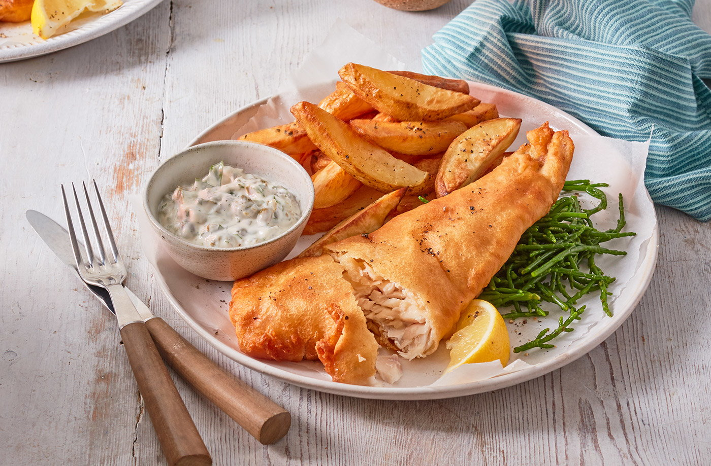

Fish and Chips

Crispy battered fish, chunky chips and homemade tartare sauce, what's not to love? Serve with a good squeeze of lemon or vinegar, if you prefer.
Ingredients
- 800g Maris Piper potatoes
- approx 500ml sunflower oil, for frying
- 4 x 120g fillets white fish, eg hake or haddock
- 200g plain flour
- 50g cornflour
- 2 tsp baking powder
- 250-300ml amber ale
For the tartar sauce
- 3 tbsp mayonnaise
- 3 tbsp half-fat crème fraîche
- 4 large gherkins, finely chopped
- 2 tbsp capers, finely chopped
- 1 bunch parsley, finely chopped
- 2 x 115g packs Tesco samphire
- lemon wedges, to serve
Method
- Preheat the oven to gas 7, 220°C, fan 200°C. Cut the potatoes (unpeeled) into 1.5-2cm chips. Transfer to a baking tray and toss with 2 tbsp of sunflower oil. Bake in the oven for 45-50 mins until golden and crisp, turning once after 25 mins.
- Meanwhile, prepare the fish. Preheat the oil in a large pan to a medium heat. It's hot when the tip of a wooden spoon bubbles when dipped in the oil, or a thermometer reads 180-190°C.
- While the oil is heating, season the fish well. In a large bowl, mix together the flour, cornflour, and baking powder. Slowly whisk in the ale until you have a thick batter the consistency of very thick cream – you may not need all of the ale.
- Dip the fish in the batter and allow the excess to drip off, then drop into the hot oil. Cook for around 3 mins per side until a deep golden colour. Repeat with the remaining fillets.
- To make the tartar sauce, mix together all the ingredients, and season to taste. For the samphire, bring a small pan of water to the boil and blanch the samphire for 2-3 mins until just tender. Drain.
- Serve the battered fish with the samphire, oven chips, tartar sauce and a wedge of lemon.
Click here to go back to the home page.